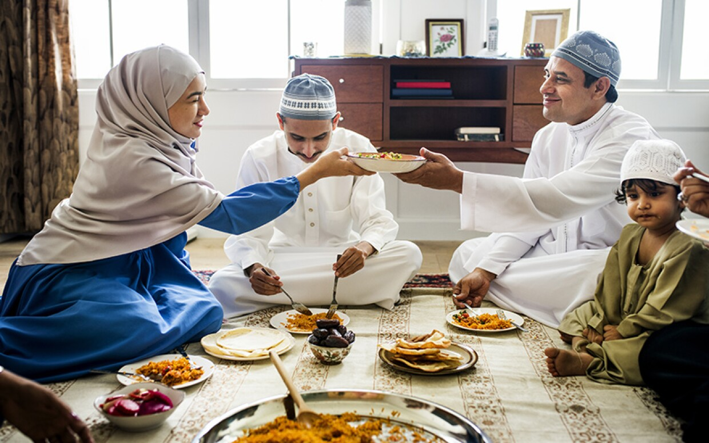
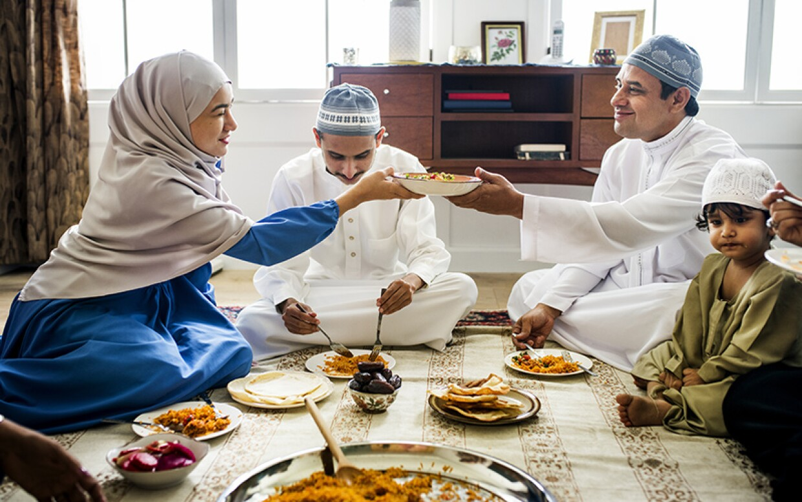

Middle Eastern cuisine is a celebration of aroma, generosity, and centuries of culinary exchange. Stretching from the Mediterranean coast to the Arabian Peninsula, the region blends ancient traditions, spice routes, and vibrant hospitality into a distinctive food culture built around warmth and sharing
Olive oil, sesame, chickpeas, yogurt, and fragrant spices form the foundation of many dishes, but each country — and often each family — transforms them differently.
Lebanon brings freshness through herbs, citrus, and mezze spreads meant for lingering meals.Turkey bridges Europe and Asia with grilled meats, stuffed vegetables, and pastries shaped by Ottoman history.
The Gulf celebrates rice dishes scented with saffron and cardamom, while Iran layers sweet, sour, and floral notes into stews unlike anywhere else.
Bread is more than food here — it's a symbol of hospitality, used to scoop dips, wrap grilled meats, or accompany slow-cooked stews. Meals are meant to be shared, served in generous portions, and often centered around gatherings, celebrations, and storytelling.
What makes Middle Eastern cuisine fascinating is its balance: bold spices that never overwhelm; comforting textures paired with bright flavors; simple ingredients elevated through centuries-old techniques. Through trade, migration, and family traditions, these dishes carry stories that stretch far beyond the table.
Start exploring, and you'll find a cuisine that feels both ancient and alive — rich in color, generous in spirit, and unforgettable in flavor.
yu.jiao@northeastern.edu
672-380-8929

410 W Georgia St #1400, Vancouver


 
